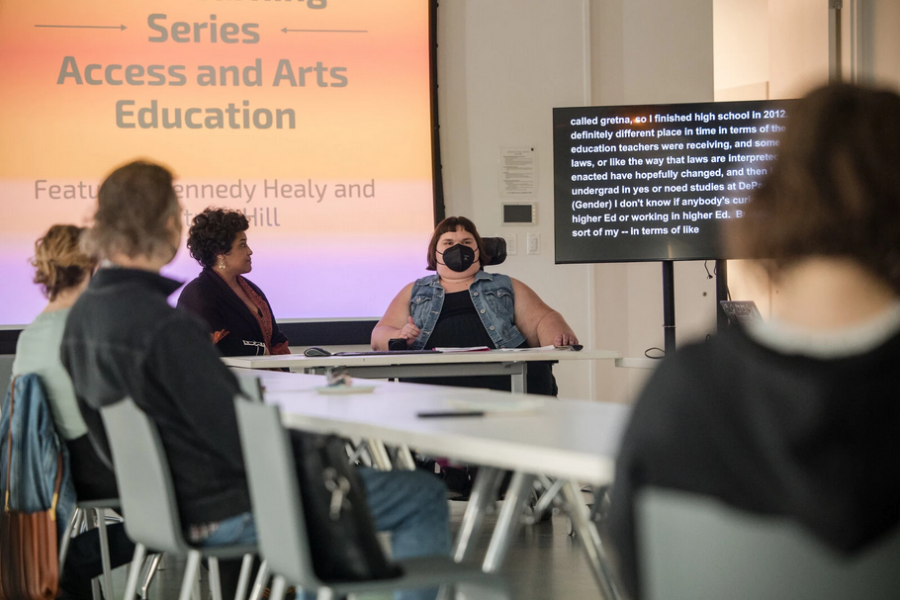

Educator Workshop | Accessibility in the Arts Classroom with Ariya Hawkins
In this workshop, we explore new tools, strategies, and accommodations for students with disabilities. Educators learn about inclusive language, sensory integration, differentiating instruction based on support needs, and enhancing their students’ emotional literacy and techniques for emotional regulation. If you’ve ever been curious about how to best support the needs of your students and create an accessible classroom environment for all, this workshop is for you.